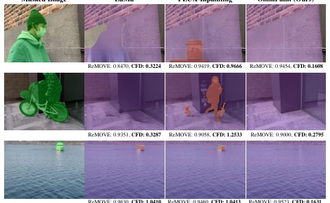
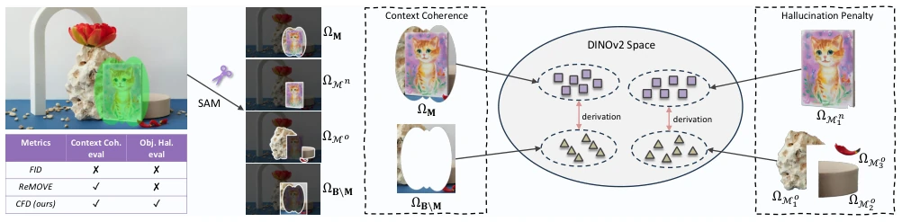
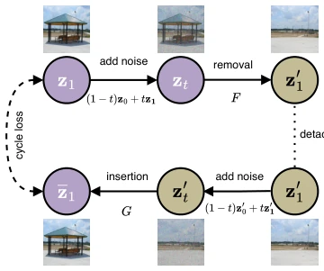
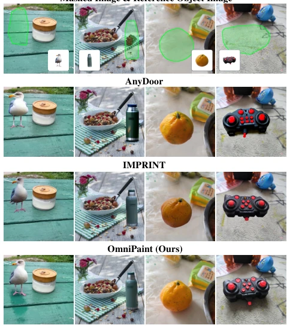
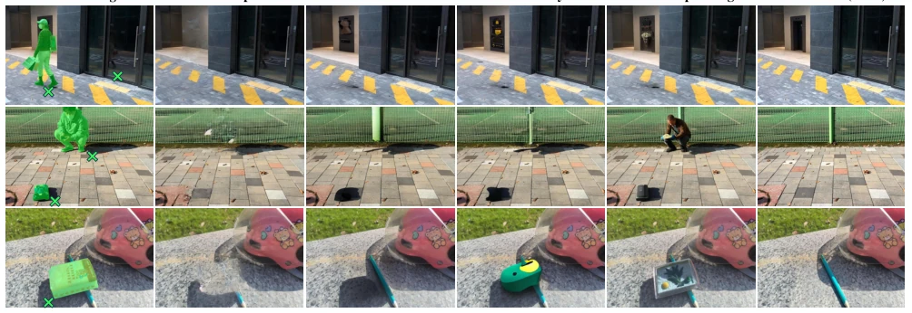

Omnipaint: Mastering Object-Oriented Editing Via Disentangled Insertion-Removal Inpainting
Yongsheng Yu, Ziyun Zeng, Haitian Zheng, Jiebo Luo abspdf
论文点评Review
OmniPaint 本质上是一篇高质量的计算机视觉论文，硬要蹭 Embodied AI 的边有点勉强，但技术确实扎实。作者把物体移除和插入从割裂任务变成互相关联的，这点思路很清晰。FLUX 基座加 LoRA 微调是常规操作，但 CycleFlow 机制利用移除模型辅助插入训练，算是个聪明的数据增强手段，解决了配对数据稀缺的痛点。CFD 指标设计得挺花哨，用 SAM 和 DINOv2 检测幻觉，比 ReMOVE 更靠谱。不过，这玩意儿离机器人落地还远着呢，毕竟只是改图，不是控制机械臂。要是能结合 3D 场景理解，或许还能在仿真里用用。总的来说，是个不错的工具，但别指望它能直接让机器人学会“擦除”现实中的物体。此外，Prompt-free 控制虽然省去了文本描述的麻烦，但也限制了语义交互的灵活性。实验部分数据量不大，主要靠合成数据补位，泛化性有待验证。
OmniPaint is essentially a high-quality computer vision paper; forcing a connection to Embodied AI is somewhat of a stretch, but the technology is indeed solid. The authors transform object removal and insertion from fragmented tasks into interrelated ones, which is a very clear idea. Using FLUX backbone with LoRA fine-tuning is standard operation, but the CycleFlow mechanism using the removal model to assist insertion training is a clever data augmentation method that addresses the pain point of scarce paired data. The CFD metric design is quite fancy, using SAM and DINOv2 to detect hallucinations, which is more reliable than ReMOVE. However, this work is still far from robot deployment, after all, it is image editing, not controlling robotic arms. If combined with 3D scene understanding, it might be usable in simulation. Overall, it is a good tool, but do not expect it to directly enable robots to learn to 'erase' objects in reality. Additionally, Prompt-free control, while saving the trouble of text descriptions, also limits the flexibility of semantic interaction. The experimental part has a small amount of data, mainly supplemented by synthetic data, and generalization needs verification.
Existing object editing methods face two major challenges: poor handling of physical effects and heavy data dependency. When removing objects, physical traces such as shadows and reflections are often ignored, leading to incoherent backgrounds [7]. When inserting objects, geometric alignment and lighting integration often fail, resulting in a 'sticker-like' appearance [33]. More critically, high-quality paired data (original images and images after removal/insertion) are extremely difficult to obtain; existing works mostly rely on synthetic data [14] or large-scale manual annotation [43], which is costly and has poor generalization. For example, although ObjectDrop attempts bootstrapping data, it lacks a reliable filtering mechanism [43]. Furthermore, evaluation metrics are lagging; metrics like ReMOVE cannot effectively capture hallucinated objects, leading to models appearing to have high scores while actually generating artifacts [4]. Therefore, there is an urgent need for a unified framework that can decouple physical effects, reduce data dependency, and offer more robust evaluation.

Figure 2. Visualization of CFD metric assessment for object re- moval. The segmentation results are obtained using SAM [17] with refinement, with purple masks for background, orange masks for segments fully within the original mask, and unmasked for those extending beyond the original mask. Note that the orange masked regions correspond to hallucinated objects. A higher Re- MOVE [4] score is better, while a lower CFD score is preferable. In these cases, ReMOVE scores are too similar to indicate removal success, while CFD score offers a clearer distinction.
OmniPaint is based on the FLUX architecture, adopting a dual-path design. The overall process is divided into three stages: first, masked image pretraining to grant basic repair capabilities; second, paired data fine-tuning to optimize LoRA parameters for removal and insertion separately; third, CycleFlow unpaired post-training. The core innovation lies in the CycleFlow mechanism, which uses the already trained removal parameters to first 'erase' the reference object and its physical effects, then conduct insertion training on large-scale unpaired data, constraining restoration through cycle consistency loss, thereby enabling the model to learn to generate real physical effects. Additionally, Prompt-free adaptive control is proposed, using learnable vectors to replace text prompts to simplify task switching. In terms of evaluation, the Context-Aware Feature Deviation (CFD) metric is designed, combining SAM segmentation and DINOv2 features to quantify background consistency and hallucination penalties, filling the gap in no-reference evaluation. In specific implementation, the removal path focuses on suppressing foreground semantics and eliminating physical traces, while the insertion path emphasizes geometric consistency and identity preservation. By freezing the FLUX backbone and fine-tuning LoRA, efficient parameter utilization is achieved.

Figure 3. Illustration of the proposed CFD metric for evaluating object removal quality. Left: We apply SAM to segment the inpainted image into object masks and classify them into nested (ΩMn) and overlapping (ΩMo) masks. Middle: The context coherence term measures the feature deviation between the inpainted region (ΩM) and its surrounding background (ΩB\M) in the DINOv2 feature space. Right: The hallucination penalty is computed by comparing deep features of detected nested objects (ΩMn) with their adjacent overlapping masks (ΩMo) to assess whether unwanted object-like structures have emerged.

Figure 4. Illustration of CycleFlow. The mapping F removes the object, predicting an estimated target z′ 1, while G reinserts the ob- ject, generating estimated target z1. Cycle consistency is enforced by ensuring G reconstructs the original latent z1 from the effect re- moval output. Dashed arrows indicate the cycle loss supervision.
Experiments cover removal and insertion tasks. The removal test set includes 300 real samples and the RORD dataset, comparing against baselines such as LaMa and FLUX-Inpainting. The insertion test set combines IMPRINT and real samples, comparing against AnyDoor and IMPRINT, etc. Metrics include FID, LPIPS, ReMOVE, and the newly proposed CFD. Results show OmniPaint significantly outperforms baselines on CFD, proving strong hallucination suppression capabilities. Ablation studies indicate that CycleFlow is crucial for physical effect generation, with optimal performance at weight γ=1.5. NFE analysis shows removal tasks are effective at NFE=1, while insertion requires higher steps. Overall performance leads in all metrics, especially showing robustness in handling complex lighting and occlusion. In quantitative results, OmniPaint has the lowest FID and CMMD, highest PSNR and SSIM, and lowest CFD score, indicating the highest generation quality and no artifacts. Additionally, during training, large-scale segmentation datasets such as COCO-Stuff were utilized as unpaired sources, effectively alleviating the data scarcity problem.

Figure 5. Qualitative comparison on object insertion. Given masked images and reference object images (top row), we com- pare results from AnyDoor [5], IMPRINT [34], and OmniPaint.

Figure 6. Qualitative comparison of object removal in challenging scenarios. Top: Simultaneous removal of objects and glass reflections. Middle: Shadow-free removal under real-world lighting. Bottom: Occlusion-robust inpainting, reconstructing background objects without distortion. The compared methods include FreeCompose [6], PowerPaint [58], CLIPAway [7], and FLUX-Inpainting [37].